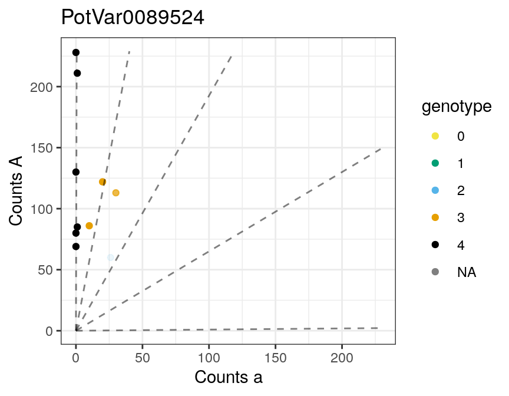
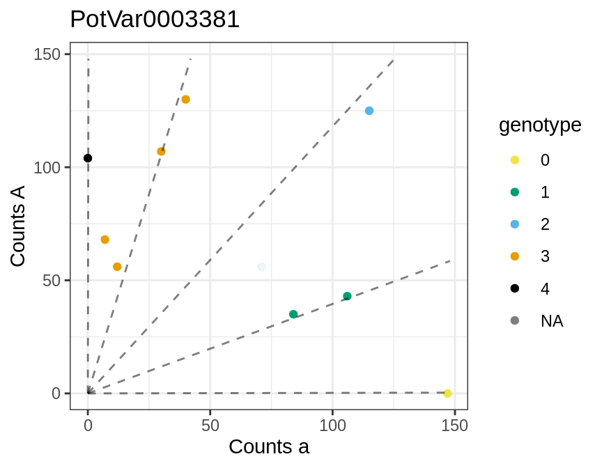
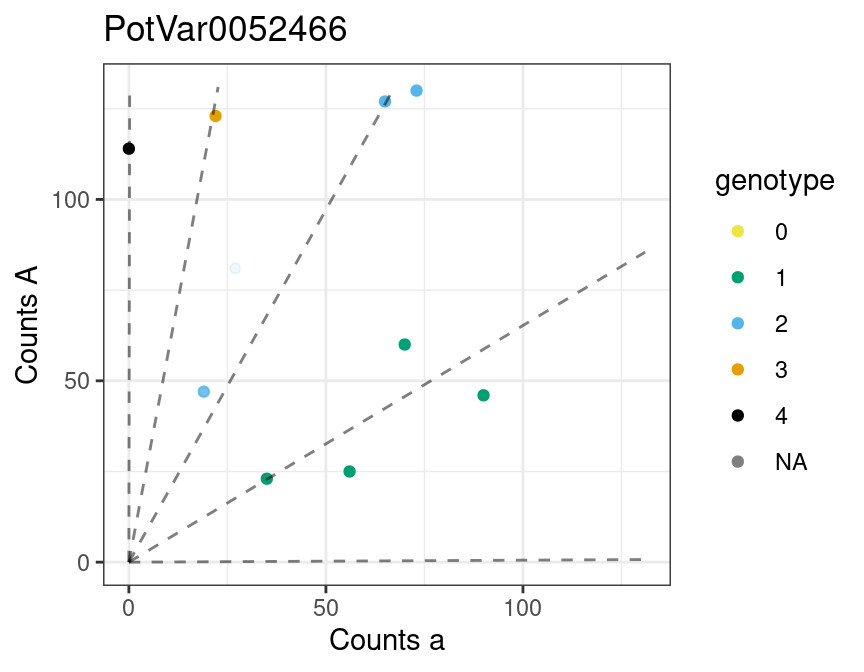

multidog.Rmdmultidog() provides support for genotyping many SNP’s by iterating flexdog() over the SNP’s. Support is provided for parallel computing. The genotyping method is described in Gerard et al. (2018) and Gerard and Ferrão (2019).
Let’s load updog and the data from Uitdewilligen et al. (2013).
uitdewilligen$refmat is a matrix of reference counts while uitdewilligen$sizemat is a matrix of total read counts. In these data, the rows index the individuals and the columns index the loci. But for insertion into multidog() we need it the other way around (individuals in the columns and loci in the rows). So we will transpose these matrices.
refmat <- t(uitdewilligen$refmat)
sizemat <- t(uitdewilligen$sizemat)
ploidy <- uitdewilligen$ploidysizemat and refmat should have the same row and column names. These names identify the loci and the individuals.
setdiff(colnames(sizemat), colnames(refmat))
#> character(0)
setdiff(rownames(sizemat), rownames(refmat))
#> character(0)If we want to do parallel computing, we should check that we have the proper number of cores:
Now let’s run multidog():
There is a plot method for the output of multidog().

#>
#> [[2]]
#>
#> [[3]]
The output of multidog contains two data frame. The first contains properties of the SNP’s, such as estimated allele bias and estimated sequencing error rate.
str(mout$snpdf)
#> 'data.frame': 100 obs. of 16 variables:
#> $ snp : Factor w/ 100 levels "PotVar0089524",..: 1 2 3 4 5 6 7 8 9 10 ...
#> $ bias : num 0.519 1.026 0.929 1.221 0.847 ...
#> $ seq : num 0.00485 0.00221 0.002 0.0039 0.00206 ...
#> $ od : num 0.00304 0.00295 0.00337 0.00275 0.00335 ...
#> $ prop_mis: num 0.004926 0.002274 0.000626 0.002718 0.003 ...
#> $ num_iter: num 6 3 3 5 7 7 4 8 8 4 ...
#> $ llike : num -14.7 -25.3 -10.4 -22.7 -32 ...
#> $ ploidy : num 4 4 4 4 4 4 4 4 4 4 ...
#> $ model : Factor w/ 1 level "norm": 1 1 1 1 1 1 1 1 1 1 ...
#> $ Pr_0 : num 0.000279 0.248211 0.66369 0.015803 0.08409 ...
#> $ Pr_1 : num 0.00707 0.45067 0.26892 0.06938 0.20154 ...
#> $ Pr_2 : num 0.0745 0.2542 0.0597 0.1931 0.2968 ...
#> $ Pr_3 : num 0.32604 0.04452 0.00725 0.34069 0.26844 ...
#> $ Pr_4 : num 0.592065 0.002423 0.000482 0.381024 0.149179 ...
#> $ mu : num 4.18 1.01 -1 3.75 2.29 ...
#> $ sigma : num 1.067 0.925 1.289 1.481 1.433 ...The second data frame contains properties of each individual at each SNP, such as the estimated genotypes (geno) and the posterior probability of being genotyping correctly (maxpostprob).
str(mout$inddf)
#> 'data.frame': 1000 obs. of 12 variables:
#> $ snp : Factor w/ 100 levels "PotVar0089524",..: 1 1 1 1 1 1 1 1 1 1 ...
#> $ ind : Factor w/ 10 levels "P1PEM10","P2PEM05",..: 8 4 3 10 7 2 1 5 9 6 ...
#> $ ref : num 122 113 86 80 69 85 130 228 60 211 ...
#> $ size : num 142 143 96 80 69 86 130 228 86 212 ...
#> $ geno : num 3 3 3 4 4 4 4 4 2 4 ...
#> $ postmean : num 3 2.99 3 4 4 ...
#> $ maxpostprob: num 1 0.988 1 1 1 ...
#> $ Pr_0 : num 3.74e-90 1.03e-78 2.21e-77 1.06e-86 8.21e-79 ...
#> $ Pr_1 : num 7.97e-23 3.86e-16 2.61e-20 6.80e-30 1.21e-26 ...
#> $ Pr_2 : num 4.94e-06 1.17e-02 3.27e-06 2.82e-14 1.01e-12 ...
#> $ Pr_3 : num 1.00 9.88e-01 1.00 6.74e-06 2.75e-05 ...
#> $ Pr_4 : num 1.45e-10 1.14e-15 3.56e-06 1.00 1.00 ...You can obtain the columns in inddf in matrix form with format_multidog().
genomat <- format_multidog(mout, varname = "geno")
head(genomat)
#> P1PEM10 P2PEM05 P2PEM10 P3PEM05 P4PEM01 P4PEM09 P5PEM04 P5PEM08
#> PotVar0089524 4 4 3 3 4 4 4 3
#> PotVar0052647 3 1 0 1 1 2 0 1
#> PotVar0120897 0 0 0 0 0 0 0 1
#> PotVar0066020 3 2 3 4 4 3 1 4
#> PotVar0003381 3 1 2 0 2 3 3 1
#> PotVar0131622 2 4 1 2 2 3 4 3
#> P6PEM11 P7PEM09
#> PotVar0089524 2 4
#> PotVar0052647 1 1
#> PotVar0120897 2 1
#> PotVar0066020 4 2
#> PotVar0003381 4 3
#> PotVar0131622 3 3To filter SNPs based on quality metrics (bias, sequencing error rate, overdispersion, etc), you can use filter_snp(), which uses the same non-standard evaluation you are used to from dplyr::filter(). That is, you can define predicates in terms of the variable names in the snpdf data frame from the output of mupdog(). It then keeps rows in both snpdf and inddf where the predicate for a SNP evaluates to TRUE.
Gerard, David, and Luís Felipe Ventorim Ferrão. 2019. “Priors for Genotyping Polyploids.” Bioinformatics, November. https://doi.org/10.1093/bioinformatics/btz852.
Gerard, David, Luís Felipe Ventorim Ferrão, Antonio Augusto Franco Garcia, and Matthew Stephens. 2018. “Genotyping Polyploids from Messy Sequencing Data.” Genetics 210 (3). Genetics: 789–807. https://doi.org/10.1534/genetics.118.301468.
Uitdewilligen, Anne-Marie A. AND D’hoop, Jan G. A. M. L. AND Wolters. 2013. “A Next-Generation Sequencing Method for Genotyping-by-Sequencing of Highly Heterozygous Autotetraploid Potato.” PLOS ONE 8 (5). Public Library of Science: 1–14. https://doi.org/10.1371/journal.pone.0062355.